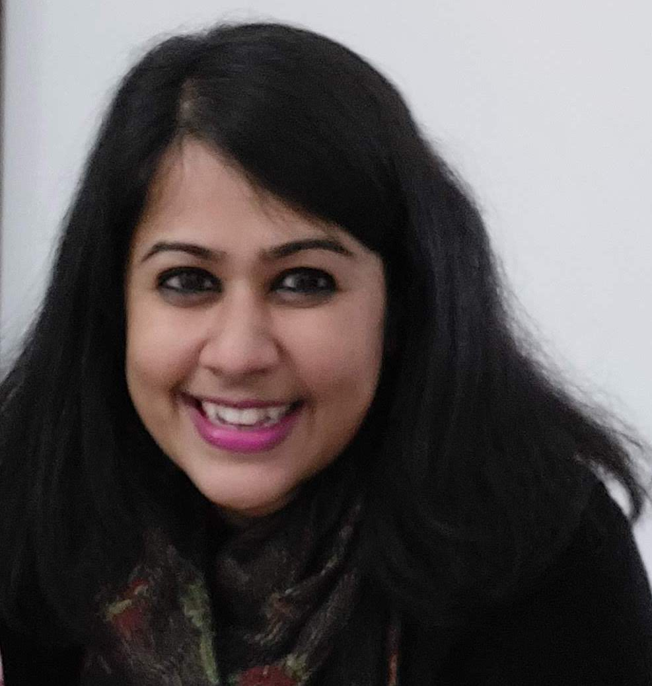

Mayurakshi Chaudhuri
Associate Professor of Sociology
FLAME University, Pune
mayurakshi.chaudhuri@flame.edu.in
Fellowships and Academic Awards
-
Indo-Swiss Grant (as Co-PI), jointly funded by the Swiss National Science Foundation (SNSF), the Ministry of Earth Sciences (MoES) and the Indian Council of Social Science Research (ICSSR) for a Digital Humanities project titled Digital Twins: negotiating identity and translocated heritage in the global age. 2022.
- GESIS-EUROLAB Fellowship, Leibniz Institute for the Social Sciences (GESIS), Germany, 2022.
- Morris and Anita Broad Research Fellowship and Travel Grant, School of International and Public Affairs, Florida International University, Miami, FL. USA, 2013.
- Silver Medal in “Literature and Cultural Studies”, Graduate and Professional Scholarly Forum, Florida International University, Miami, FL. USA, 2013.
- Morris and Anita Broad Research Fellowship and Travel Grant, School of International and Public Affairs, Florida International University, Miami, FL. USA, 2012.
- Dissertation Proposal Development Fellowship (SSRC DPDF) Program award in the Multiculturalism, Immigration, and Identity in Western Europe and the United States, Social Science Research Council, USA, 2011.
- Doctoral Evidence Acquisition Fellowship Award for conducting dissertation fieldwork in India, University Graduate School, Florida International University, Miami, FL. USA, 2011.
- The Trans-Atlantic Summer Institute (TASI) in European Studies Fellowship , Center for German and European Studies at the University of Minnesota, and additionally funded by the German Academic Exchange Service (DAAD). Minneapolis, MN. USA, 2010.
- Government of India National Merit Scholarship , The Ministry of Human Resource Development, India, 2002.
- The Geography Faculty Prize for All-Round Performance, awarded by the Department of Geography, Loreto College, and the University of Calcutta, India, 2002.